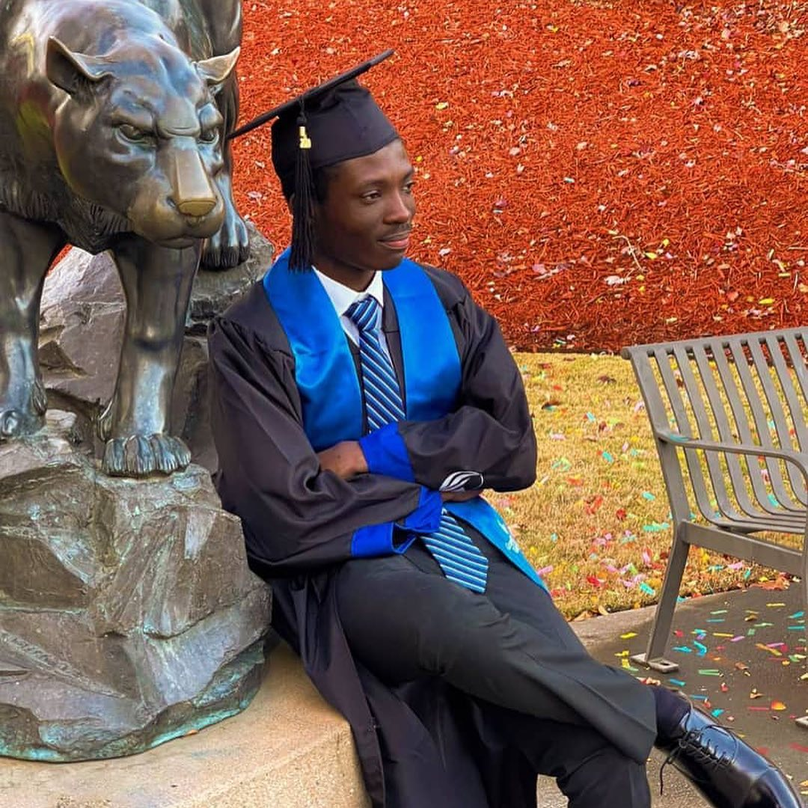

Let me share with you a little bit about myself. My name is Joel-Cedric Beugre, and ever since I was a child, I have been fascinated with new technologies. I still remember the time when I tried to manipulate the source code of a gaming website to increase my game currency online. Even though it didn't work out as planned, that experience sparked a passion within me for technology that continues to this day.
As I grew older and entered college, I was unsure about what major to choose. That's when my parents suggested that I explore an American university in my country that offered a major in computer science. Without hesitation, I enrolled in the program and pursued my passion for technology.
I completed the first part of my computer science bachelor's degree at the University of Grand Bassam in Cote d'Ivoire. I then transferred to Georgia State University to complete my studies and earn my degree in computer science.
Following my undergraduate studies, I decided to continue my education and pursue a master's degree in data science. I enrolled in the program at Indiana University - Purdue University, where I gained a deeper understanding of the field and honed my skills in data analysis and visualization. I gained a scholarship in this school and work as a Graduate Teaching Assistant in Data Science, where I learn more about data science by teaching it to class below my level.
Throughout my academic journey, I remained dedicated to my passion for technology and committed to pushing the boundaries of what is possible in the field. Today, I am proud to have turned my education and experience into a successful career in technology, and I continue to explore new opportunities to learn and grow in the field.